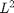

PYRDOWN - Top-down hierarchical decomposition of an image.
Contents
Description
Perform the top-down hierarchical decomposition (resolution decreases) of an image into a pyramid generated by repeated application of the reduce2d operator introduced in [Unser99] and [BMIU99]; it also implements the classical top-down Laplacian Pyramid of [BA83].
Syntax
Ip = PYRDOWN(I); [Ip,Ep] = PYRDOWN(I, nlevels, stack, filter, order);
Inputs
I : input image, possibly multispectral.
nlevels : (optional) number of levels of decomposition; default: nlevels=Inf, ie. REDUCE2D is applied as many times as possible.
stack : (optional) logical flag; if true, all the levels of the pyramid are stored in the output, otherwise only the last level; default: stack=true.
filter : (optional) name of the filter; it is either:
- 'lpl' for Laplacian filter implemented in [BA83],
- 'spl' for the spline filter,
- 'spl2' for the spline  filter,
- 'cspl' for the centered spline filter,
- 'cspl2' for the centered spline filter;
for standard pyramids ('spl', 'spl2'), the coarser grid points are at the even integers; for centered pyramids ('cspl', 'cspl2'), the coarser grid points are placed in-between their two closest finer grid predecessors [BMIU99]; default: filter='cspl'.
order : (optional) order for the filters based on splines; it is either:
- 0, 1, 2 or 3 for the spline filter,
- 0, 1, 3 or 5 for the spline L2 filter,
- 0, 1, 2, 3 or 4 for the both centered spline filters,
default: order=3, with filter='cspl'.
Outputs
Ip : output pyramid; if stack==true, Ip is a cell of nlevels images, each being a reduced version of the previous level; if stack=false, Ip is just the last level of the pyramid.
Er : (optional) error of the last level of the pyramid, computed as error=signalEXPAND2D(Ip); it gives the loss of information due to image reduction.
References
[BA83] P.J. Burt and E.H. Adelson: "The Laplacian Pyramid as a Compact Image Code", IEEE Transactions on Commununication, 31(4):337-345, 1983. http://ieeexplore.ieee.org/xpls/abs_all.jsp?arnumber=1095851&tag=1
[Unser99] M. Unser: "Splines: a perfect fit for signal and image processing", IEEE Signal Processing Magazine, 16(6):22-38, 1999. http://ieeexplore.ieee.org/xpls/abs_all.jsp?arnumber=799930
[BMIU99] P. Brigger, F. Muller, K. Illgner and M. Unser: "Centered pyramids," IEEE Transactions on Image Processing, 8(9):1254-1264, 1999. http://ieeexplore.ieee.org/xpls/abs_all.jsp?arnumber=784437
[BIG] Software available at: http://bigwww.epfl.ch/sage/pyramids/. See README at: http://bigwww.epfl.ch/sage/pyramids/README.TXT
See also
Related: PYRUP, REDUCE2D, EXPAND2D. Called: PYRDOWN_BASE, EXPAND2D_BASE.
Function implementation
function [Ip, varargout] = pyrdown(I,varargin)
check if possible
error(nargchk(1, 13, nargin, 'struct')); error(nargoutchk(1, 2, nargout, 'struct')); if ~isnumeric(I) error('pyrdown:inputparameter','a matrix is required in input'); end
parsing parameters
p = createParser('PYRDOWN'); p.addOptional('nlevels',Inf, @(x)isscalar(x) && x>=1); p.addOptional('stack', true, @(x)islogical(x)); p.addOptional('filter','cspl', @(x)ischar(x) && ... any(strcmpi(x,{'lpl','spl','spl2','cspl','cspl2'}))); p.addOptional('order',3, @(x)isscalar(x) && x>0); % parse and validate all input arguments p.parse(varargin{:}); p = getvarParser(p);
checking parameters
% check/update number of levels [X,Y,C] = size(I); %#ok maxlevel = floor(log2(max(X,Y))); if p.nlevels>maxlevel if p.nlevels~=Inf warning('pyrdown:inputwarning',... ['maximum of ' num2str(maxlevel) ' levels for the considered image']); end p.nlevels = maxlevel; end % check compatibility of parameters if any(strcmpi(p.filter,{'cspl','cspl2''spl''spl2'})) if ~exist('reduce2d_mex','file') error('pyrdown:errorlibrary', ... 'mex file reduce2d_mex required for spline based pyramid'); elseif isempty(p.order) p.order = 3; end elseif ~isempty(p.order) warning('pyrdown:warninginput', ... 'input variable ''order'' ignored with Laplacian pyramid'); p.order = []; end if (any(strcmpi(p.filter,{'cspl','cspl2'})) && ~ismember(p.order,[0,1,2,3,4])) || ... (strcmpi(p.filter,'spl') && ~ismember(p.order,[0,1,2,3])) || ... (strcmpi(p.filter,'spl2') && ~ismember(p.order,[0,1,3,5])) error('pyrdown:inputerror', ... 'check compatibility of filter and order variables'); end
main computation
- compute the hierarchical representation
Ip = pyrdown_base(I, p.nlevels, p.stack, p.filter, p.order);
- compute the error
if nargout==2 % take the last level if p.stack, Io = Ip{p.nlevels}; else Io = Ip; end; for i=1:p.nlevels [Io,Er] = expand2d_base( Io, p.filter, p.order ); % expand end varargout{i} = Er; end
end % end of pyrdown